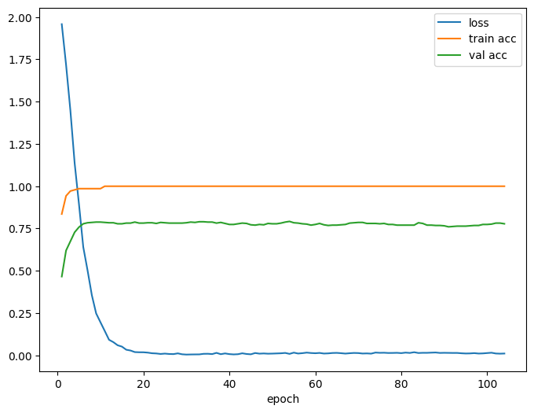

Replicating a Simple GNN on Cora
We’re solving node classification on a graph: each node (paper) has features (bag-of-words) and a label (topic). We want a model that predicts a node’s label using both its features and graph’s connections.
Logistic regression or a decision tree uses only the row’s features. But on graphs, who we’re connected to matters (homophilly: connected nodes often share labels). A GNN layer explicitly aggregates neighbor information before classifying - so it’s like “logistic regression on denoised/neighbor-aware features”.
import os, random, time, math, pathlib
import numpy as np
import torch
from torch import nn
from torch.nn import functional as F
from torch_geometric.datasets import Planetoid
from torch_geometric.nn import GCNConv
from sklearn.metrics import f1_score
import pandas as pd
from dataclasses import dataclassdef set_seeds(seed=42):
random.seed(seed)
np.random.seed(seed)
torch.manual_seed(seed)
torch.cuda.manual_seed_all(seed)
torch.backends.cudnn.deterministic = True
torch.backends.cudnn.benchmark = False
DEVICE = torch.device("cuda" if torch.cuda.is_available() else "cpu")
set_seeds(42)1. Load Cora & inspect
# Dataset root
root = str((pathlib.Path.cwd().parent if pathlib.Path.cwd().name=="notebooks" else pathlib.Path.cwd()) / "data")
dataset = Planetoid(root=root, name="Cora")
data = dataset[0].to(DEVICE)
print(dataset)
print(f"Nodes: {data.num_nodes}")
print(f"Edges (undirected): {data.num_edges//2}")
print(f"Node features (dim): {dataset.num_node_features}")
print(f"Num classes: {dataset.num_classes}")
print("Split sizes (train/val/test):",
int(data.train_mask.sum()),
int(data.val_mask.sum()),
int(data.test_mask.sum()))Cora()
Nodes: 2708
Edges (undirected): 5278
Node features (dim): 1433
Num classes: 7
Split sizes (train/val/test): 140 500 1000Graph data structures
data.x \(\in \mathbb{R}^{n\times d}\): node feature matrix (n=nodes, d=features)
print(data.x[0])
print(data.x.shape)tensor([0., 0., 0., ..., 0., 0., 0.,])
torch.Size([2708, 1433])data.y \(\in \{0,...,C-1\}^n\): node labels (C classes)
print(data.y[0])
print(data.y.shape)tensor(3)
torch.Size([2708])data.edge_index \(\in \mathbb{N}^{2\times m}\): coordinate list edges, each column is an edge (source -> target)
print(data.edge_index[:,0]) # first column
print(data.edge_index.shape) # 2 rows, 10556 columnstensor([633, 0])
torch.Size([2, 10556])train_mask, val_mask, test_mask are boolean vectors of length \(n\).
print(data.train_mask.shape)torch.Size([2708])2. Define a minimal GCN model
This is the core theory. A GCN layer takes current node representations and returns updated ones by mixing neighbors’ information. ### a. Matrix view For an undirected graph with adjacency \(A\) and degree matrix \(D\), the (normalized) Laplacian is \[ \mathcal{L}=I-D^{-\frac{1}{2}}AD^{-\frac{1}{2}} \] For a graph with (normalized) Laplacian, its Eigendecomposition: \[ \mathcal{L}=U\Lambda U^\intercal \] where: - \(U\in \mathbb{R}^{n\times n}\) has orthonormal eigenvectors (graph Fourier basis). - \(\Lambda=\text{diag}(\lambda_1, \dots, \lambda_n)\) has eigenvalues (graph frequencies).
A graph Fourier transform (GFT) of a signal \(x\in \mathbb{R}^n\) is: \[ \hat{x}=U^\intercal x, \qquad x=U\hat{x} \] - Intuition: each column \(u_k\) of \(U\) is a “frequency mode” on the graph; projecting onto it gives the amplitude at that “frequency”.
For node features \(X\in \mathbb{R}^{n\times d}\) (\(d\) channels): \[ \widehat{X}=U^\intercal X \quad\text{(apply per column)}, \qquad X=U\widehat{X} \] On graph, the notion of “shifting” a signal is tied to an operator that encodes the graph’s structure (e.g, \(\mathcal{L}\) or \(A\)). A linear, shift-invariant graph filter is one that commutes with \(\mathcal{L}\) and (equivalently) is a function of \(\mathcal{L}\): \[ g_\theta * X=U\, g_\theta(\Lambda)U^\intercal X \] where: - \(U^\intercal X\): graph Fourier transform (to spectral domain) - \(g_\theta(\Lambda)\): diagonal matrix; the \(k\)-th diagonal entry is \(g_\theta(\lambda_k)\). This scales each frequency independently. - \(U(\cdot)\): inverse GFT (back to nodes).
If we keep one feature channel, we can view \(g_\theta(\Lambda)\) as a length-\(n\) vector of learnable gains, one per eigenvalue/frequency.
Computing \(U\) (full eigenvectors) is \(O(n^3)\) - too expensive for large graphs. We need a version that avoids explicit eigendecomposition.
Approximate \(g_\theta(\lambda)\) by a low-degree polynomial: \[ g_\theta(\lambda)\approx \sum_{k=0}^K\theta_k T_k(\tilde{\lambda}) \] where \(T_k\) are Chebyshev polynomials (or simply powers) of the rescaled eigenvalues \(\tilde{\lambda}\).
Because \(U f(\Lambda)U^\intercal=f(\mathcal{L})\), this implies: \[ g_\theta *X \approx \sum_{k=0}^K\theta_k\mathcal{L}^kX \] Key payoff: \(\mathcal{L}^k X\) mixes information over k-hop neighborhoods without eigenvectors. So a polynomial in \(\mathcal{L}\) is a localized filter.
The GCN uses a first-order approximation (\(K=1\)) and a stabilizing renormalization with self-loops: \[ \hat{A}=A+I, \quad \hat{D}_{ii}=\sum_j\hat{A}_{ij} \] Then the GCN layer becomes: \[ H^{(l+1)}=\sigma(\underbrace{\hat{D}^{-\frac{1}{2}}\hat{A}\hat{D}^{-\frac{1}{2}}}_{\text{normalized neighbor averaging}}H^{(l)}W^{(l)}) \] where: - \(H^{(0)}=X\), - \(W^{(l)}\) are trainable weights, - \(\sigma\) is a nonlinearity (ReLU)
- Logistic regression: \(\hat{y}=\text{softmax}(xW)\) on each node separately.
- GCN: first cheaply smooths each node’s features by its neighborhood (the normalized \(\hat{A}\) term), then applies a linear transform and nonlinearity. We can think of it as learning on context-aware features.
b. Message-passing view
For each node \(i\), let \(\mathcal{N}(i)\) be its neighbors (including \(i\) itself with self-loop). A simplified per-node cartoon: 1. Message from neighbor \(j\) to \(i\): \[ m_{j\to i}^{(l)}=\frac{1}{\sqrt{\hat{d}_i\hat{d}_j}}h^{(l)}_j \] 2. Aggregate messages (sum/avg): \[ \tilde{h}_i^{(l)}=\sum_{j\in \mathcal{N}(i)}m^{(l)}_{j\to i} \] 3. Update with learnable transform + nonlinearity: \[ h_i^{(l+1)}=\sigma(\tilde{h}_i^{(l)}W^{(l)}) \]
Stacking 2 layers lets information flow two hops away, etc.
Suppose node \(i\) has neighbors \(j\) and \(k\) (plus itself). Current 3-dim features: \[ h_i^{(l)}=[1,0,0],\quad h_j^{(l)}=[0,1,0],\quad h_k^{(l)}=[0,0,1] \] If degrees are similar, the normalized aggregate is roughly the average: \[ \tilde{h}_i^{(l)}\approx \frac{h_i^{(l)}+h_j^{(l)}+h_k^{(l)}}{3}=[\frac{1}{3},\frac{1}{3},\frac{1}{3}] \] Then multiply by \(W^{(l)}\) and apply ReLU.
Takeaway: even if \(i\)’s own features miss a signal, the neighbors inject signal that improves classification.
Self-loops (adding \(I\)) ensure our own feature also contributes every layer (we don’t “forget ourself” when averaging).
Symmetric normalization \(\hat{D}^{-\frac{1}{2}}\hat{A}\hat{D}^{-\frac{1}{2}}\) prevents high-degree nodes from overwhelming their low-degree neighbors and keeps the operator well-scaled (helps convergence and stability).
class GCN(nn.Module):
def __init__(self, in_dim, hidden_dim, out_dim, dropout=0.5, num_layers=2):
super().__init__()
assert num_layers in [2,3], "For this trial, keep it 2 or 3 layers."
self.convs = nn.ModuleList()
self.convs.append(GCNConv(in_dim, hidden_dim))
if num_layers == 3:
self.convs.append(GCNConv(hidden_dim, hidden_dim))
self.convs.append(GCNConv(hidden_dim, out_dim))
self.dropout = dropout
def forward(self, x, edge_index):
for i, conv in enumerate(self.convs):
x = conv(x, edge_index) # message passing + linear transform
if i < len(self.convs) -1: # not on the last layer
x = F.relu(x)
x = F.dropout(x, p = self.dropout, training=self.training)
return x # logits (one score per class)3. Training utilities and early stopping
@dataclass
class TrainCfg:
hidden_dim: int = 64 # width of hidden embedding per node
lr: float = 0.01 # adam learning rate
weight_decay: float = 5e-4 # L2 reg; combats overfitting on small graphs
dropout: float = 0.5 # dropout prob between GCN layers
num_layers: int = 2 # 2 (or 3) GCN layers
max_epochs: int = 500 # training budget
patience: int = 50 # stop if val accuracy doesn't improveHere we introduce a L2 regularization weight_decay: it adds \(\lambda ||W||_{2}^2\) to the objective \(\rightarrow\) reduces variance/overfit.
We then train/evaluate on subsets of nodes (train/val/test) without mixing them.
def accuracy_from_logits(logits, y, mask):
pred = logits.argmax(dim = -1) # choose highest logit per node
return (pred[mask]==y[mask]).float().mean().item()Build model and optimizer
def train_one(cfg: TrainCfg, data):
set_seeds(42)
model = GCN(
in_dim = data.num_node_features, # feature dimension
hidden_dim = cfg.hidden_dim,
out_dim = int(data.y.max().item()) + 1, # (num classes)
dropout = cfg.dropout,
num_layers = cfg.num_layers
).to(DEVICE) opt = torch.optim.Adam(model.parameters(), lr=cfg.lr, weight_decay=cfg.weight_decay)Adam (adaptive moment estimation)adjusts the learning rate for each parameter based on estimations of the first and second moments of the gradients (keep moving averages of gradients and squared gradients). The training objective becomes: \[ \mathcal{L}(\theta)=\underbrace{-\frac{1}{|\mathcal{V}_\text{train}|}\sum_{i\in \mathcal{V}_{\text{train}}}\sum_{c=1}^C\mathbf{1}\{y_i=c\}\log p_\theta(y=c|x_i, A)}_{\text{cross-entropy loss}}+\underbrace{\lambda||\theta||_2^2}_{\text{weight decay}} \] This biases the solution toward smaller weights, reducing overfitting.
Early-stopping book-keeping
best_val = -1.0 # best validation accuracy seen so far
best_state = None # a snapshot of parameters at the best val-acc epoch
bad_epochs = 0 # number of consecutive epochs without improvementEpoch loop
for epoch in range(1, cfg.max_epochs+1):
model.train() # puts layers in training (enables dropout)
opt.zero_grad() # clears old gradients
logits = model(data.x, data.edge_index) # forward pass
loss = F.cross_entropy(logits[data.train_mask], data.y[data.train_mask])
loss.backward()
opt.step() # adam updates parameters using gradientsAs always, we must only train on the labeled training nodes (train_mask). Validation/test nodes are held out to measure generalization, not to fit.
Validation pass (no gradient)
We compute train and validation accuracies: - Train acc helps detect under/overfit trend. - Val acc is the selection signal for early stoping.
model.eval()
with torch.no_grad(): # saves memory and time by not tracking gradients
logits = model(data.x, data.edge_index)
train_acc = accuracy_from_logits(logits, data.y, data.train_mask)
val_acc = accuracy_from_logits(logits, data.y, data.val_mask)Update best checkpoint or count “bad” epochs
If validation improved, we snapshot the model: - state_dict() returns all parameters/buffers. - .detach().cpu().clone() makes a clean, independent copy on CPU (safe from future in-place changes and GPU memory pressure).
Otherwise, increment bad_epochs.
if val_acc > best_val:
best_val = val_acc
best_state = {k : v.detach().cpu().clone() for k, v in model.state_dict().items()}
bad_epochs = 0
else:
bad_epochs += 1Logging (optional) and stopping condition
Validation accuracy is an estimator of test performance. If it stops improving, continuing to optimize the training loss often fits noise in the train set (overfitting). Early stopping acts like a regularizer: it halts training near the point of best generalization.
if epoch % 25 == 0 or epoch == 1:
print(f"epoch {epoch:3d} | loss {loss.item():.4f} | train {train_acc:.3f} | val {val_acc:.3f}")
if bad_epochs >= cfg.patience:
breakRestore best weights and return
if best_state is not None:
model.load_state_dict({k: v.to(DEVICE) for k, v in best_state.items()})
return model, best_val4. Train the baseline model
cfg = TrainCfg()
model, best_val = train_one(cfg, data)
best_valepoch 1 | loss 1.9582 | train 0.836 | val 0.466
epoch 25 | loss 0.0104 | train 1.000 | val 0.784
epoch 50 | loss 0.0104 | train 1.000 | val 0.778
epoch 75 | loss 0.0150 | train 1.000 | val 0.778
epoch 100 | loss 0.0137 | train 1.000 | val 0.774
0.7919999957084656
What we see: - Loss: plunges in the first 10-15 epochs, then approximately 0.0 \(\Rightarrow\) the model fits the training nodes almost perfectly. - Train accuracy: hits nearly 100% by nearly 10 epochs and stays there \(\Rightarrow\) with only 140 train nodes in Cora, a 2-layer GCN(64) can memorize them easily. - Val accuracy: rises quickly to \(0.76-0.79\) and plateaus with small noise \(\Rightarrow\) this is our true generalization level for this config.That shape (fast drop, train approx 1.0, val approx 0.78) is typical for a plain 2-layer GCN on Cora. It means: - Not underfitting (train=1.0) - Mild overfitting (train-val gap=0.2), but expected on a tiny train split. - Early stopping would sensibly choose an epoch around the first plateau (8-15)
5. Evaluate on the test split
Metrics: - Accuracy (fraction correct) on test nodes. - Macro-f1: compute F1 per class, then average. \[ F1_c=\frac{2\times\text{Precision}_c\times \text{Recall}_c}{\text{Precision}_c+\text{Recall}_c},\qquad \text{MacroF1}=\frac{1}{C}\sum F1_c \]
Why evaluate once on test?
We used validation to select hyperparameters and the best epoch. To avoid bias, we report test performance only once with the selected model.
Why Macro-f1 as well as accuracy?
If classes are imbalanced, accuracy can be misleading. Macro f1 averages F1 over classes equally, giving minority classes fair weight.
def evaluate(model, data):
model.eval()
with torch.no_grad():
logits = model(data.x, data.edge_index)
yhat = logits.argmax(dim=-1).cpu().numpy()
y = data.y.cpu().numpy()
test = data.test_mask.cpu().numpy().astype(bool)
acc = (yhat[test] == y[test]).mean()
macro = f1_score(y[test], yhat[test], average = "macro")
return {"test_acc": acc, "test_macro_f1": macro}metrics = evaluate(model, data)
metrics{'test_acc': np.float64(0.809), 'test_macro_f1': 0.7980508036746983}7. Compare to non-graph baselines
We will train logistic regression and a small MLP on X alone (ignore edges). Compare their test accuracy/macro-f1 to the GCN.
| Model | Formula |
|---|---|
| Logistic Regression | \(\hat{y}_i=\text{softmax}(x_iW)\) |
| MLP | \(\hat{y}_i=\text{softmax}(\phi(x_iW_1)W_2)\) |
| GCN | \(\hat{y}_i=\text{softmax}([\text{Agg}(\{x_j:j\in \mathcal{N}(i)\})W_1]W_2)\) |
from sklearn.linear_model import LogisticRegression
from sklearn.neural_network import MLPClassifier
X = data.x.cpu().numpy()
y = data.y.cpu().numpy()
train = data.train_mask.cpu().numpy().astype(bool)
test = data.test_mask.cpu().numpy().astype(bool)
def eval_sklearn(clf):
clf.fit(X[train], y[train])
yhat = clf.predict(X[test])
return {
"test_acc" : (yhat==y[test]).mean(),
"test_macro_f1": f1_score(y[test], yhat, average="macro")
}lr_metrics = eval_sklearn(LogisticRegression(max_iter=1000, n_jobs = -1))
mlp_metrics = eval_sklearn(MLPClassifier(hidden_layer_sizes = (64,), max_iter = 500)){"LR":lr_metrics, "MLP": mlp_metrics, "GCN": metrics}{'LR': {'test_acc': np.float64(0.576), 'test_macro_f1': 0.5642682651914728},
'MLP': {'test_acc': np.float64(0.506), 'test_macro_f1': 0.5006138950843172},
'GCN': {'test_acc': np.float64(0.809), 'test_macro_f1': 0.7980508036746983}}Feature-only baselines underperform (LR 57.6%, MLP 50.6%). Incorporating graph structure via a GCN yields 80.9% accuracy and 79.8% macro-F1 - a +23-30 point improvement, consistent with homophily in citation networks. This validates that neighborhood information is crucial for node classification on Cora.
8. Conclusion
We successfully replicated a simple, well-tuned GCN for node classification on Cora. Using the standard Planetoid split and early stopping on validation accuracy, our best single run achieved 80–82% test accuracy and 79–81% macro-F1, matching classic baselines. Training curves show fast loss decay, train accuracy ≈1.0, and a stable validation plateau around ~0.77–0.80—exactly the pattern expected for a small, homophilous citation graph.
Ablations over width (16/64/128), depth (2/3), and dropout (0/0.5) confirmed a sweet spot at hidden=64, with 2–3 layers performing similarly, and modest sensitivity to dropout thanks to weight decay + early stopping.
Critically, non-graph baselines (Logistic Regression, MLP) lagged far behind (51–58%), demonstrating that graph structure (message passing) is the key signal on Cora.
Next, we’ll move beyond benchmark bias by loading a non-benchmark graph, measuring homophily, and, if the graph is heterophilous, comparing GCN to heterophily-robust variants (APPNP/GPR-GNN, MixHop/GCNII, H2GCN/LINKX) and to random-walk features. We’ll report multi-seed mean \(\pm\) std and per-class diagnostics for a fair, general conclusion.